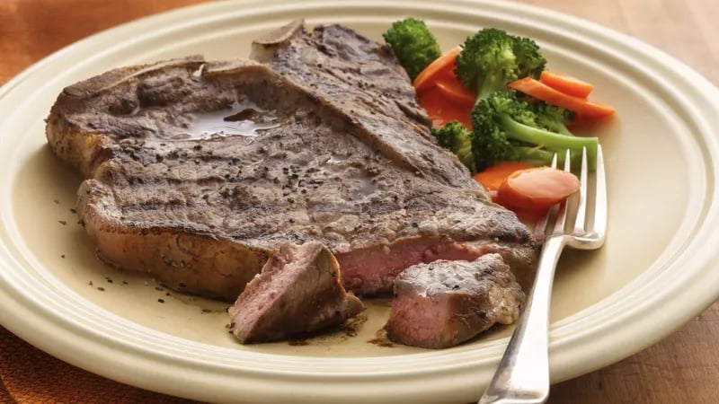

Back
Grilled Beef Steaks

Prep
20 Min
Total
20 Min
Servings
4
Ingredents
- 4
beef steaks, about 3/4 inch thick (porterhouse, rib eye, sirloin or T-bone steaks) or about 1 inch thick (tenderloin steaks)
- 1
teaspoon salt
- 1/4
teaspoon pepper
Steps
- Prepare the coals or a gas grill for direct heat. Heat to medium heat, which will take about 40 minutes for charcoal or about 10 minutes for a gas grill.
- Cut outer edge of fat on steaks (except tenderloin steaks)
diagonally at 1-inch intervals with a sharp knife. Do not cut into the meat because it will allow the juices to cook out and the beef will become dry.
- Place the beef on the grill rack over medium heat. Cover the grill; cook 6 to 8 minutes for rib eye, 10 to 12 minutes for porterhouse and T-bone or 13 to 15 minutes for sirloin and tenderloin, turning beef once halfway through cooking, until an instant-read meat thermometer inserted in center of thickest part reads 145°F for medium-rare or 160°F for medium doneness. Sprinkle with salt and pepper.